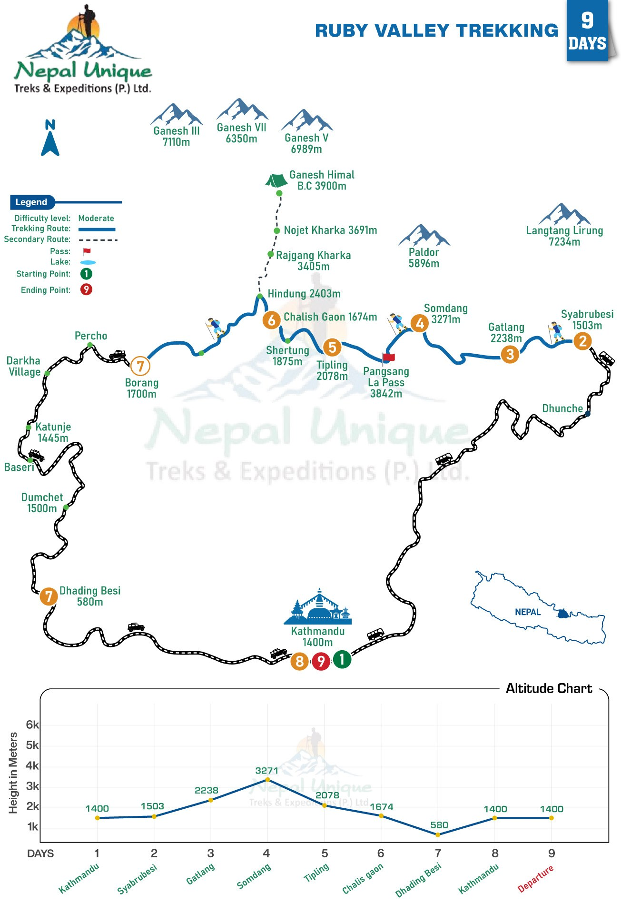

Ruby Valley Trekking
Ruby Valley Trek is a pretty old destination trekking journey, also famously known as the Ganesh Himal Trek. Sitting in the north-central part of Nepal, this trekking route covers four different districts: Dhading, Rasuwa, Gorkha, and Nuwakot.


Key Trip Facts
Trek Overview
Trip Highlights
A beautiful experience of a 9-day trek to Ruby Valley.
Enjoy some outstanding and majestic views of the Ganesh Himal range.
Explore the unexplored region of the Ruby Valley, known for its picturesque villages, landscapes, and terraced fields.
Chance to relax in the natural hot springs at Tatopani.
Cross Pangsang La Pass, 3,842 m / 12,604 feet, for the best and unmissable view and experience.
Walk past several waterfalls, rivers, and traditional villages while interacting with the locals.
Visit different historic monasteries throughout the trail.
A trek on one of the off-the-beaten trekking routes in Nepal.
Ruby Valley Trekking Overview
Ruby Valley Trek is a pretty old destination trekking journey, also famously known as the Ganesh Himal Trek. Sitting in the north-central part of Nepal, this trekking route covers four different districts: Dhading, Rasuwa, Gorkha, and Nuwakot. Besides, this trekking route is also peaceful between the mighty peaks of the Manaslu and Langtang ranges. Participating in the Ruby Valley Trekking package takes us deep into central Nepal’s remote mountain villages, far from the crowded tourist trails.
The trek to Ruby Valley with Nepal Unique Treks & Expeditions begins with a drive from Kathmandu to Syabru Besi, which takes about 8 to 9 hours. From Syabru Besi, we begin the walk through different villages, including Chawatar, Gatlang, Somdang, Tipling, and Chalish, before returning to Kathmandu and ending the package. Furthermore, the trekkers will also get some panoramic mountain views while walking past different rivers like the Trishuli and through deep gorges, and terraced farmlands painting the hills.
The Ruby Valley Trekking route also takes us through dense forests, mystical holy lakes, high passes, and traditional villages. Throughout these villages, the trekkers can get chances to delve deep into the Gurung, Tamang, Chhetri, and Biswakarma communities, all welcoming you with warm smiles and hospitality.
Unlike more commercialised routes, Ruby Valley offers pure, soulful trekking. Along with walking past such amazing parts of nature, the trail also leads us to sacred sites like Parbati Kunda, the twin waterfalls of Ganga and Jamuna, and the mineral-rich hills of Somdang. At its peak, Pangsang La Pass (3,855m) reveals a breathtaking 360° view of Ganesh Himal, Langtang Lirung, Manaslu, Paldor Peak, and beyond.
As a whole, let us tell you that the Ruby Valley trek is not just a trek, it's more of a cultural encounter, a spiritual experience, and a raw Himalayan escape.
Permits for the Ruby Valley Trekking
Going for the Ruby Valley Trek requires the trekkers to obtain just two permits. Remember that these permits are very important for the authorities to keep track of the trekkers and also for you to enter different restricted areas during the Ruby Valley Trek journey.
These are the two permits required for the Ruby Valley Trekking:
Trekkers' Information Management System (TIMS)
Langtang National Park Entry Permit
Our local representatives will assist you in obtaining these permits if you book the package with us. So, when you come to Nepal, we make sure to keep the permits ready.
Best Season for the Ruby Valley Trek
If you think about trekking in Nepal, you must be very careful about the seasons you choose. For the best experience with the least difficulties, we recommend trekkers to go for the Ruby Valley Trek during the Spring season (March to May) or the Autumn season (September to November).
Why Spring and Autumn?
The spring and Autumn seasons are the magical times for any trekking journey in Nepal. During these seasons, the trail comes alive with vibrant rhododendron blooms, the air is fresh, and the skies are typically clear. Besides, you can also expect to walk in a moderate temperature during the day and cool weather during the night. As autumn arrives just after monsoon, this season also offers similar vibes. Moreover, during these seasons, most of the tea houses and lodges also remain open, making accommodation available and easier.
Furthermore, these seasons also offer the most spectacular and unobstructed views of all the Himalayas that can be seen throughout the Ruby Valley Trekking journey. Based on all these reasons, we cannot recommend any other season as ideal for the Ruby Valley Trek.
What Happens in Other Seasons?
Other than these two seasons, Nepal also has two more seasons: summer or monsoon and winter. Well, these are the seasons that Nepal Unique Treks & Expeditions, as a long-running trekking agency in Nepal, does not recommend to the trekkers (especially beginners). Here are two reasons why these seasons are not ideal for trekking in Nepal:
Winter (December to February) is possible for experienced trekkers, but higher passes like Pangsang La may be snow-covered and extremely cold.
Summer/Monsoon (June to August) brings heavy rains, slippery trails, and limited visibility. This season is not recommended due to frequent landslides and leeches.
Ruby Valley Trek Difficulty Level
Ruby Valley Trek is considered to be a moderately difficult trekking route in Nepal. As this trek does not reach extreme altitudes like the Everest Base Camp trek and Annapurna Circuit trek, we also recommend this trek for beginners and trekkers with less experience.
What Makes This Trek Moderate?
Altitude Range: The trek ranges from 1,500m (Syabrubesi) to 3,842m (Pangsang La Pass), high enough to feel the effects of elevation, but generally below the risk zone for altitude sickness.
Trekking Duration: Daily walking hours range from 5 to 7 hours, with some longer days during high passes and descents.
Trail Conditions: The trail includes forest paths, narrow ridgelines, stone steps, and unpaved village routes. Some sections, especially after rain, can be slippery or rugged.
Remoteness: The Ruby Valley is a less commercial trekking region, meaning fewer lodges and less infrastructure. You’ll need to be more self-reliant and comfortable with basic facilities.
Who is this trek suitable for?
First-time trekkers with reasonable fitness and determination will enjoy this trek with proper pacing and acclimatisation.
Experienced hikers will find it a peaceful alternative to busier trails, rich in culture and scenery.
Trekkers should be comfortable with walking 6-7 hours a day, sometimes on uneven or uphill terrain.
How to Prepare for the Ruby Valley Trek?
Just like any other trek in Nepal, the Ruby Valley Trek also requires the trekkers to prepare properly before ascending. Even though the trail is moderate and good for beginners, ascending without proper preparation can cause many difficulties and problems.
Here is how you can prepare for the Ruby Valley Trek:
Physical and Mental Preparation
First and foremost, the trekkers need to go for physical and mental preparation. Even though you do not need to be a mountaineer, having a good base level of cardiovascular fitness and leg strength will help you enjoy the trek more. So, here is what to do:
Start training at least 4-6 weeks in advance.
Focus on hiking, walking on inclines, and stair climbing.
Include cardio (jogging, cycling, swimming) 3–5 times a week.
Strengthen your core and lower body with squats, lunges, and planks.
Practice hiking with a light backpack to simulate real conditions.
Documents and Paperworks
Another important thing to be ready with before heading for the Ruby Valley Trek (applies to all the treks) is the paperwork. So, we recommend the trekkers to do these before going for the trek:
Ensure your travel insurance covers trekking up to 4,000m.
Bring 2 passport-sized photos and a copy of your passport for trekking permits.
Have some Nepali rupees in cash, as ATMs are not available at higher altitudes of the trail.
Other Preparation
Once you are physically and mentally ready and have all the paperwork and documents in place, you are almost ready to go for the Ruby Valley Trek. However, there are some more preparations to do for better experiences, and they are:
Research about the Ruby Valley Trekking trail and clear out all the queries with the trekking guides.
Keep yourself ready to spend some days in places where facilities are minimal.
It'll be very helpful if the trekkers can learn at least a few Nepali phrases to make the interactions with the locals more personal.
Make sure to talk about any health issues or complications with our representatives beforehand. That can help us determine the precautions.
Go for a full body checkup before hitting the trek.
Separate at least a couple of buffer days for extra stays or delays.
Food and Accommodation
Unlike the well-trodden trails of Everest or Annapurna, the Ruby Valley Trek offers a more authentic and rustic experience when it comes to food and accommodation. Due to the remoteness and developing phase of the region, we recommend that trekkers expect basic but charming teahouses, home-cooked meals, and genuine cultural interactions.
For accommodation, trekkers can expect twin-share or multi-share accommodations provided by locally run tea houses and homestays. Besides, the Nepal Unique Treks & Expeditions team makes sure to arrange accommodation that is hygienic, cozy, and perfect for a relaxing rest after such walks in the Himalayan terrain. With recent development and accessibility, you can also expect electricity, WiFi, and hot water in many tea houses. However, let us tell you that some tea houses might charge extra for these services.
Meals on the Ruby Valley trek are home-cooked, organic, and carb-rich to keep you energized for long days of hiking. Remember that most of the ingredients are locally prepared by the people of these communities. Most of the tea houses and lodges offer items like Dal Bhat (rice, lentils, curry, and pickles), vegetable noodle soup, Tibetan bread, momos, chowmein, thukpa, etc.
Transportation
The Nepal Unique Treks & Expeditions team keeps the safety of the trekkers as its topmost priority. Therefore, we make sure to arrange proper transportation facilities as our journey begins and ends with an overland journey. This overland journey will be done in a 4WD shared jeep or a tourist bus, depending on the number of people in the group.
This drive generally takes about 8 to 9 hours, which also includes the breaks that we take in between. With Nepal Unique Treks & Expeditions, you will also find drivers with a government license and many years of experience driving on this route. With all these, trekkers do not have to worry about the quality of the vehicles that we arrange for transportation and the drivers who handle transportation during the Ruby Valley Trek.
Ruby Valley Trekking Itinerary: Day by Day
9 Days program for Ruby Valley Trekking. Daily timings and sequences remain flexible according to weather, flight operations, and group pace.
Day 1: Arriving in Kathmandu 1,310m /4,323ft
Approx. 1,345 m / 4,413 ft
Welcome to Nepal, a land of the Himalayas and nature's blessings. Upon arrival at Tribhuwan International Airport, Kathmandu, local representatives from Nepal Unique Treks & Expeditions will receive you and escort you to the hotel. After checking into your room and freshening up, the rest of the day belongs to you. Take your time to stroll around the town and spend some relaxing time in the spas, massage hubs, or cafes. In the evening, you can return to the hotel, where you will meet the guides for the Ruby Valley Trek. After they finish briefing you about the journey, you can return to the hotel and sleep.
Day 2: Kathmandu - Shyabru Besi 1503m/4945Ft. 8-9 hrs drive
Approx. 1,503 m / 4,931 ft
As you wake up, freshen up, and have your breakfast in the hotel, you will find our representatives waiting for you. Today, we begin our journey towards the trekking region with a drive from Kathmandu to Shyabru Besi. This 8 to 9-hour drive takes us past several villages, rivers, waterfalls, and amazing natural experiences. Besides, you can also expect some breaks in between the journey for refreshments and meals. We are on a scenic overland journey that goes north through Trishuli Bazaar, gradually ascending alongside the roaring Trishuli River before finally reaching Shyabru Besi. This charming Tamang village is where the mountains feel close enough to touch. In the evening, we recommend the trekkers to take a quick stroll and interact with the locals before returning to the hotel for dinner and overnight stay.
Day 3: Trek from Syabrubesi (1,503m/4,945Ft) to Chawatar (lunch) to Gatlang (2,337m/7,690 ft)
Approx. 2,337 m / 7,667 ft
On the third day, we officially begin the walking journey in the Ruby Valley Trekking map. This section of the trail starts by crossing a suspension bridge and then ascends steadily through lush forest trails, where monkeys chatter in the canopy and the air is fresh with pine and wild herbs. As we ascend a little further, we can notice the trail opening up to panoramic views of the Ganesh Himal range, with snow-covered ridges piercing the sky. After walking for a few hours, we stop at Chawatar, a beautifully settled village, for lunch and a short break. A few more hours to ascend before we finally reach Gatlang, a village located at an altitude of 2337 meters above sea level. Seated beautifully on the hillside, Gatlang is a beautifully preserved Tamang village of traditional stone houses, intricate wood carvings, and a timeless mountain spirit. Interact with the locals to know more about the village and lifestyle here before having dinner.
Day 4: Trek from Gatlang (2,337m/7,690 ft) to Parvati Kund, Yuri Kharka (lunch) to Somdang (3,271m/10,760 ft)
Approx. 3,271 m / 10,732 ft
After having a fulfilling home-cooked breakfast in Gatlang, we continue our walk on the Ruby Valley Trekking trail. Today's route begins with a climb through dense forests of rhododendron and bamboo, tracing ancient trails used by traders and herders for centuries. Our first stop is the sacred alpine lake Parvati Kunda, a serene pool surrounded by legend and spiritual reverence. A little more walking from the lake, and we will reach Yuri Kharka, a place where we will stop for lunch. After lunch with views of the jagged skyline, we continue towards Somdang. Somdang is an old mining village rich in minerals like zinc, copper, crystals, and ruby (the gem that gave this valley its name). The final stretch of today's trail includes a steep but rewarding experience that also offers occasional glimpses of Ganesh Himal's icy crown.
Day 5: Trek from Somdang (3,271m/10,760 ft) to Pangsang Pass (3,842 m /12,604ft) - Tipling (2,078m/6,835 ft)
Approx. 3,842 m / 12,605 ft
Out of all nine days in the Ruby Valley Trekking package, the fifth day stands out as the most exhilarating one. Today's journey begins with the gradual ascent through alpine forests and scattered yak pastures. In a little while of ascending through such an exciting and adventurous trail, we reach the Pangsang Pass located at an altitude of 3842 meters above sea level. From here, the trekkers can enjoy some of the most eye-soothing views of the entire central Himalayan range, including Manaslu, Ganesh Himal, Langtang Lirung, Paldor Peak, and Boudha Himal. After spending some adventurous time in the Pangsang Pass, we trace our steps back to Tipling (2078 meters). This large Tamang and Gurung settlement sits as a cultural mosaic of color, music, and mountain hospitality. Here, the trekkers can witness stone-paved lanes and prayer flags fluttering in the wind. In a nutshell, Tipling, indeed, is a perfect place to rest for a day before descending further on the Ruby valley trekking map.
Day 6: Trek from Tipling (2,078m/6,835Ft) to Chalis Village (1,800m/5,960 ft)
Approx. 1,800 m / 5,906 ft
On the sixth day, the trekkers go deeper into the heart of Ruby Valley. We start with a descent through terraced fields, waterfalls, and different smaller settlements. Besides, you can also notice the air getting warmer as we drop in elevation. Within a few hours of leaving Tipling, we finally reach Chalis Village, another cultural gem nestled in a wide valley basin. This beautiful village at an altitude of 1800 meters also serves as a home to Gurung, Dalit (Biswakarma), and Tamang communities. In the evening, you can take advantage of the beautiful opportunity to interact with the locals before having dinner and spending a restful night.
Day 7: Trek from Chalish (1,800m/5,960 ft) to Borang (1,700m/ 2,296ft), drive to Dhading Besi (580m/1,902Ft )
Approx. 580 m / 1,903 ft
After breakfast, we begin our final trek, descending gently along a scenic ridge trail towards Borang, a low-lying hill village rich in agricultural life and Himalayan charm. The walk is relaxed and rewarding, with plenty of chances to engage with friendly locals, observe traditional farming practices, and enjoy one last stretch of unspoiled Himalayan scenery. From Borang, we bid farewell to the mountains and start our drive back toward Dhading Besi, a bustling district hub that bridges the foothills and lowlands. Besides, the change in environment is striking, from alpine forests to subtropical plains, and the journey reflects Nepal’s rich ecological diversity. After checking into your hotel, you’ll have a chance to rest and reflect on the incredible journey through one of Nepal’s most underrated trekking regions.
Day 8: Drive from Dhading Besi to Kathmandu (1,310m /4,323ft)
Approx. 1,310 m / 4,298 ft
Finally, we have come to the end of the walking section of the Ruby Valley Trekking trail. As you wake up and have breakfast, our representatives drive you from Dhading Besi to Kathmandu. Throughout this 5-6 hour drive, the trekkers can enjoy the final bits of Nepal's rural life. As you reach Kathmandu, our local representatives will drive you to the hotel, where you can check in and take proper rest. Besides, the rest of the evening completely belongs to you. We recommend the trekkers to go for a quick stroll and relax in some bars or pubs with drinks and live music. Nepal Unique Treks and Expeditions arranges overnight stay and dinner in the hotel.
Day 9: Departure to International Airport.1310m
Approx. 1,310 m / 4,298 ft
Well, the ninth day marks an official end to the 9 Days Ruby Valley Trek. Our local representatives will drive you to the airport based on your flight schedule. However, if you want to go for another Trek or adventures in Nepal, please let us know. We can make arrangements for another package as well.
What is Included (Regular Package)
What is Excluded
Booking Dates & Availability
Packing List for Ruby Valley Trekking
Don't have it? Rent sleeping bags, down jackets, or poles in Kathmandu or arrange with us.Hiking Gear (5 items)
Layering & Clothing (5 items)
Sleep, Toiletries & Documents (3 items)
Read before you book: Ruby Valley Trekking
Practical logistics derived directly from this package's route facts, inclusions, and elevation profile.
Accommodation & Meals (3-star Hotel / Tea House)
Accommodation follows the package grade (3-star Hotel / Tea House) in Kathmandu and along the Langtang route. Check your package Includes section for included meals and Kathmandu hotel nights.
Permits & Local Logistics
Transportation is arranged via Private Jeep. Applicable permits listed in the package inclusions are arranged by Nepal Unique Treks prior to departure.
Route Difficulty & Elevation (3,842 m /12,604ft)
Ruby Valley Trekking is rated Moderate with a maximum elevation of 3,842 m /12,604ft. Follow your guide's pacing and stay hydrated throughout the 9 Days itinerary.
Best Time to Visit (March – May and Sep – Dec)
Recommended operating season on the source page: March – May and Sep – Dec. Additional official notes from the source page follow below.
Traveller Useful Information
Packing smart and light is something that trekkers should do for a better experience. This means that your backpack needs to include all the necessary items, but should not be very heavy.
Therefore, we recommend the trekkers to pack the items that are listed below:
Clothing
Moisture-wicking base layers (2–3 sets)
Insulating mid-layer (fleece or down jacket)
Waterproof shell jacket and pants
Lightweight trekking pants (2 pairs)
Warm hat, sun hat, and buff or scarf
Gloves (thin inner + warm outer pair)
Thermal underwear (for cold nights)
T-shirts (preferably quick-dry)
Warm socks (3–4 pairs)
Sleepwear / comfortable evening clothes
Footwear
Well broken-in trekking boots
Lightweight camp shoes or sandals
Extra laces and socks
Gear & Essentials
Daypack (20–30L) with rain cover
Duffel bag or large backpack (carried by porter)
Trekking poles
Sleeping bag (rated to -10°C or lower)
Headlamp + extra batteries
Sunglasses (UV-protective)
Water bottles (or bladder) – 2L total
Water purification tablets or a filter
Quick-dry towel
Dry bags or ziplocks (for organising and waterproofing)
Personal Items & Toiletries
Sunscreen (SPF 30+), lip balm with SPF
Wet wipes and hand sanitiser
Biodegradable soap and shampoo
Toothbrush, toothpaste, toilet paper
Small first aid kit (band-aids, blister pads, etc.)
Personal medication + altitude sickness pills (Diamox if recommended by your doctor)
Did you read the entire Ruby Valley Trek details? Are you ready to make this journey a part of your adventurous and exciting memory? If so, don't delay, just book the Ruby Valley Trek package with Nepal Unique Treks & Expeditions.
With our team, you can expect an insightful, adventurous, and safe trek to the Ruby Valley at a very reasonable price. Just check pricing on the right side of the package and click on the BOOK NOW button. In case you have any questions regarding the package, you can also inquire by clicking on the INQUIRE NOW button. Go ahead, book the package, and make an advance 20% payment to confirm the booking.
Altitude Profile of Ruby Valley Trekking
Weather on Ruby Valley Trekking
Ruby Valley Trekking Route Map

Book This Trek
Contact our Kathmandu coordinators using the booking panel for private or fixed-group departures.
Trip Feedback
Explore verified traveller stories or leave feedback on Nepal Unique Treks.
Visit Nepal Unique Treks